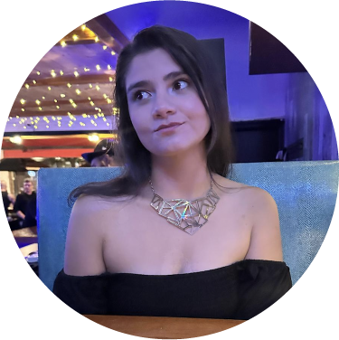

Hello, I'm
Paula Quintero
Interactive Media Designer and Marketer
To me, the creative and design process is the way to express what's in one's soul. It is pouring one's self into building solutions that carry a message and change people's experiences. The creative process is a collective journey where exploration, freedom and imagination take the wheel to reach a common and meaningful destination.
Welcome to my portfolio!